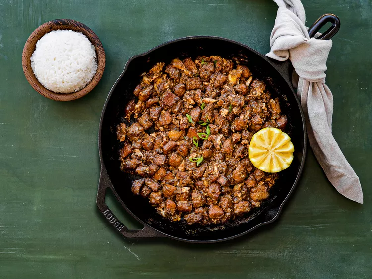

Odin Project Recipes

Here is an image of Pork Sisig
Pork sisig is a popular Filipino dish. It can be considered as a main dish or an appetizer. The composition of this dish is mainly of pig’s parts such as minced pork meat, ears, and face. Chicken liver, onions, and chili peppers are also added.
Ingredients
- 1 lbs. pig ear
- 1 1/2 lb pork belly
- 1 pc. onion
- 3 tbsp. soy sauce
- 1/4 txp. ground black pepper
- 1 knob ginger
- 3 tbsp. chili flakes
- 1/2 tsp. garlic powder
- preferably 3 to 5 pcs. of calamansi or 1 pc. lemon
- 1/2 cup butter
- 1/4 lb. chicken liver
- 6 cups water
- 3 tbs. mayonnaise
- 1/2 tsp. salt
- 1 pc. egg optional
Procedure
- Pour the water in a pan and bring to a boil Add salt and pepper.
- Put-in the pig’s ears and pork belly then simmer for 40 minutes to 1 hour (or until tender).
- Remove the boiled ingredients from the pot then drain excess water.
- Grill the boiled pig ears and pork belly until done
- Chop the pig ears and pork belly into fine pieces
- In a wide pan, melt the butter or margarine. Add the onions. Cook until onions are soft.
- Put-in the ginger and cook for 2 minutes
- Add the chicken liver. Crush the chicken liver while cooking it in the pan.
- Add the chopped pig ears and pork belly. Cook for 10 to 12 minutes
- Put-in the soy sauce, garlic powder, and chili. Mix well
- Add salt and pepper to taste
- Put-in the mayonnaise and mix with the other ingredients
- Transfer to a serving plate. Top with chopped green onions and raw egg.
- Serve hot. Share and Enjoy (add the lemon or calamansi before eating)